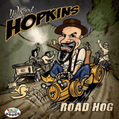

Wayne Hopkins - Road Hog (Single, 2013)
01 - Road Hog (3:29)
02 - I've Got My Hands On You (2:43)
© Rollin Records :: [RR45031]
Notes
United Kingdom, England.
Wayne Hopkins - Vocals, Bass, Guitar
Adam Burney - Harmonica
Evan Jenkins - Drums
Both songs are composed-by Hopkins
reference information: Discogs®
Review
015/366 (Project 366)
Stroll and Roll with a huge narrative ballad, how the most goofy stories usually starts. Dirty and greasy sound with harmonica loud. Rollin', rollin', rollin'.
A very smokey mood. Clanking instruments, muffled drums, shell-shocked sound and completely furious vocalist. Both tracks are wild, greasy, eccentric road ballads! The title song "Road Hog" with a clear tone of this single. Even artwork is about that mood. Harmonica is a gem there. However guitars are no less important and with fairly bright moments. The second track "I've Got My Hands On You" is ooh, uhm... aggressive, pushy stroller. Bouncing harmonica and hotshot motive in the rest with a plain rhythm. The general mood is overloaded and even loaded with excess. Rigorous enough and mad in the final. Without mercy and somewhat trashy.
I think that this single will appeal to many fans of this kind of feral Rockin' and Rollin'. With all influence of hard swamp, heavy ballads and even a bit of greasy rockabilly elements, harmonica tune and assertive lyrics. And in particular to those who just love pretty gruff and uncouth music. For me this is not the most interesting sound, but one cannot fail to note the main features (in particular, harmonica and bass work).